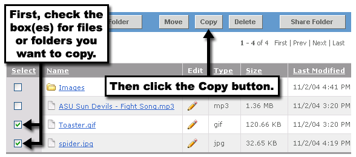
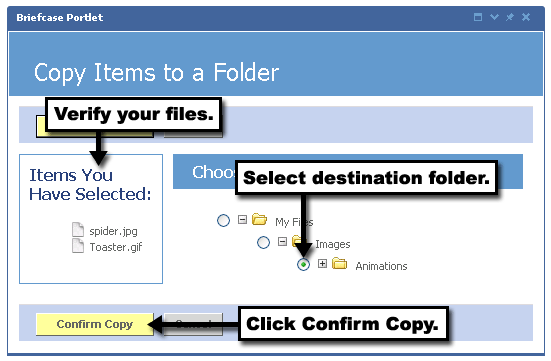

3. Verify that your items are now in the left column in the list of Items You Have Selected.
4. Choose the destination folder where you'd like these items to be moved.
5. Click the Confirm Copy button.
You can now navigate to the destination folder specified to see that your items have been copied.
